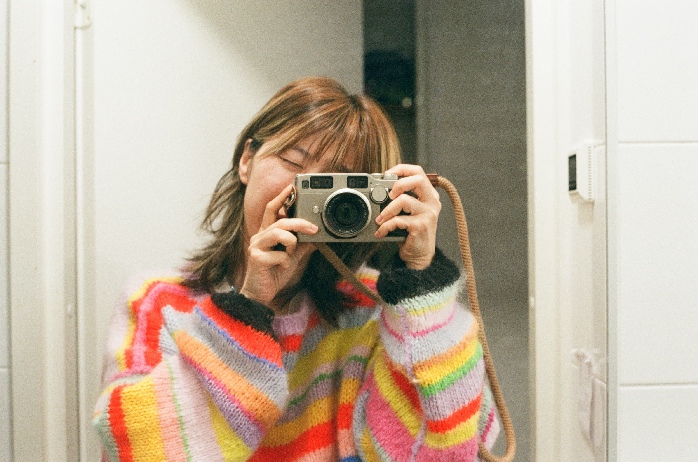

I'm Heya 해나 Kwon. I am a Korean American artist, designer, and researcher working across sound, new media, and participatory practices.
My current artistic research examines the psychological, material, and ecological conditions of media systems with a focus on the relationship between bodies and media. A question I've been asking is: how can we live with slowness, playfulness, and care in our current extractive and accelerationist regimes? How can art and technology help in figuring that out?
Currently, I am going to school in Espoo, Finland. Before that, I lived in California and worked as a software engineer at Bandcamp. Before that, I lived as an artist, mainly as a music producer, while working in the service industry.
On my free time, I like to draw, vlog, read, and journal.

Education
Selected Work Experience
Exhibitions
Workshops & talks
Residencies, awards & grants
Publications
Get in touch :) heya0@proton.me